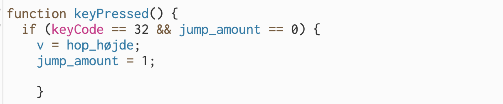
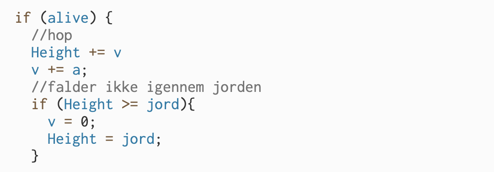

Relavante kodestumper:
Forklaring af hoppe koden.
Man kan hoppe når man trykker på space, og står på jorden. Det kan man fordi hoppe-funktionen er et if statement, der virker når der bliver trykket på space, der har keycode 32. Variablen v angiver hvor hurtigt karakteren bevæger sig, hvor negative tal er opad. Den bliver sat til at være lig med hop_højde, der angiver hvor højt figuren hopper, og der er en anden del af koden, der sørger for at der er tyngdekraft i spillet.
kode1:

Denne kode definerer funktionen, keyPressed, og laver et if-statement, som siger at hvis mellemrummet bliver trykket og den såkaldte jump_amount er 0, så bliver der sat en hastighed opad, som man så hopper. Så sættes jump_amount til 1, så man ikke bare kan blive ved med at hoppe.

Dette køres hvis man er i live. Her plusses højden af spilleren med v, som gør at den vil rykke opad. Dog bliver v mindre og mindre, da der ligges a til v. a er negativt. Det vil gøre at der kommer et hop der ligner en kurve. Så snartr at personen rammer jorden, da vil personen ikke falde længere. Det gør den fordi at den hele tiden sætter højden af spilleren til højden af jorden.
Tryk her for at komme tilbage:
Dino-Game projekt